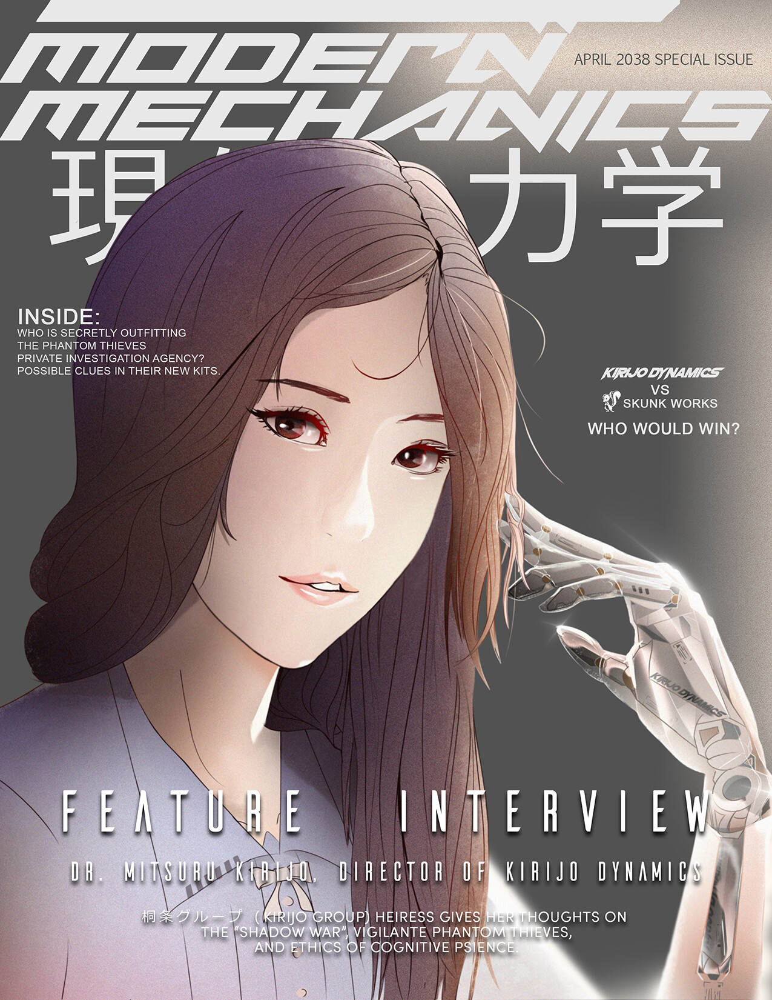

No Impossible Frontiers

Inspired by the Japanese animated series Violet Evergarden, this fictional promotional image focuses on mechanics and proportions of the hand. The opportunity was also taken to do some world building for the series by developing a brand indentity for Kirijo Dynamics, a fictional robotics company featured in many of my other illustrations.
(Raymond Lam, Photoshop, 2019)
Modern Mechanics - Special Issue

Second piece in the series, this time using the artwork in the narrative context of a magazine cover, as opposed to a promotional image. Special attention given to learning magazine cover designs, and hierarchial structure of text layout.
(Raymond Lam, Photoshop, 2019)